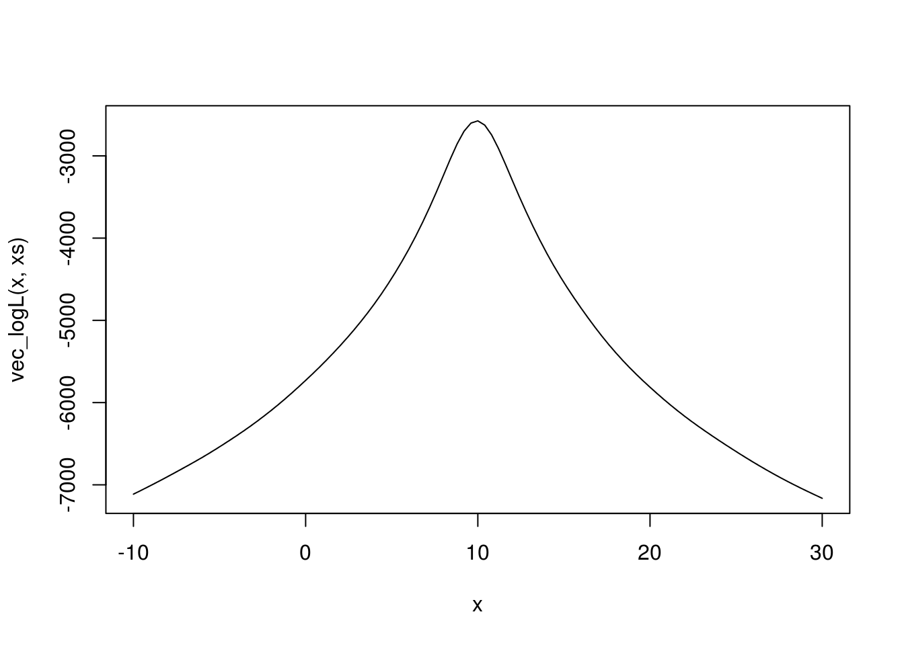

4 Ocenjivanje metodom maksimalne verodostojnosti
Jedan od najpoznatijih metoda za odredjivanje ocena parametra neke raspodele je upravo metod maksimalne verodostojnosti. On nalazi primenu u svim primenama statistike, od testiranja hipoteza do mašinskog učenja.
Osnovna postavka je sledeća:
Neka je \(\mathbf{X}=(X_1, \dots, X_n)\) prost slučajan uzorak sa zajedničkom gustinom (ili zakonom raspodele) \(f(\mathbf x;\theta)\) gde je \(\theta\) nepoznati parametar. Funkcija verodostojnosti se definiše kao \[L(\theta; \mathbf x) = f(\mathbf x;\theta) = \prod_{i=1}^nf(x_i,\theta),\] odnosno funkcija verodostojnosti je zajednička raspodela uzorka, posmatrana kao funkcija parametra \(\theta\). Parametar može biti višedimenzioni (npr. \((\mu, \sigma^2)\) kod normalne raspodele), ali ćemo se mi baviti samo jednodimenzionim parametrima u ovom tekstu.
Ocena maksimalne verodostojnosti parametra \(\theta\) je \[\hat{\theta} = \underset{\theta}{\mathrm{argmax}}L(\theta; \mathbf x).\] Dakle ocena metodom maksimalne verodostojnosti je ona vrednosti parametra za koju je funkcija verodostojnosti najveća.
Da bismo našli ovaj maksimum, uglavnom prelazimo na traženje maksimuma logaritma funkcije verodostojnosti koji ima lepši oblik \[l(\theta) = \log L(\theta, \mathbf x) = \sum_{i=1}^n\log f(x_i,\theta).\] Maksimum dalje nalazimo odredjivanjem stacionarne tačke \(l(\theta)\), rešavanjem jednačine \[\frac{d}{d\theta}l(\theta) = 0.\] U velikom broju slučajeva rešenje ove jednačine, a samim tim i ocena, se može naći analitički, kao u primerima radjenim na matematičkoj statistici, ali nekada rešenje nije dostupno u analitičkom obliku.
U tom slučaju rešenje se mora naći numeričkim metodama. Jedan takav primer raspodele je Košijeva raspodela, koju ćemo koristiti za demonstraciju numeričkih metoda za nalaženje ocena maksimalne verodostojnosti.
4.1 Njutnova metoda
Cilj Njutnove metode je da nadje nulu funkcije \(f(x)\), tj. da nadje rešenje jednačine \[f(x) = 0.\] Osnovna ideja metode je da se u svakoj iteraciji kriva \(y=f(x)\) aproksimira njenom tangentom i nadje nula te tangente, čime se dobija neka aproksimacija nule početne funkcije, sve dok se ne dostigne neki uslov zaustavljanja.
Ako u \(n\)-toj iteraciji imamo aproksimaciju nule \(x_n\), novu aproksimaciju \(x_{n+1}\) dobijamo na sledeći način:
- Nadjemo tangentu krive \(y=f(x)\) u tački \(x_n\), koja ima oblik \[y_t = f'(x_n)(x-x_n)+f(x_n).\]
- Aproksimacija u sledećoj iteraciji, \(x_{n+1}\), je nula te tangente, odnosno rešenje jednačine \[0 = f'(x_n)(x-x_n)+f(x_n),\] odakle dobijamo \[x_{n+1} = x_n - \frac{f(x_n)}{f'(x_n)}.\]
Pseudokod za Njutnovu metodu (nije u R-u!) izgleda ovako:
function njutn(x0, f, df, tol, maxiter) {
x = x0 - f(x0) / df(x0)
iter = 1
while (abs(x - x0) > tol) {
if(iter == maxiter)
break
x0 = x
x = x0 - f(x0) / df(x0)
iter = iter + 1
}
return x
}4.1.1 Primer Košijeve raspodele
Primenićemo Njutnovu metodu za nalaženje ocene maksimalne verodostojnosi parametra \(\theta\) uzorka iz Košijeve raspodele sa gustinom
\[f(x, \theta)=\frac{1}{\pi}\frac{1}{1+(x-\theta)^2}.\]
Generisaćemo uzorak iz Košijeve raspodele za koji ćemo tražiti ocenu parametra.
set.seed(21321)
xs <- rcauchy(1000, location = 10)Logaritam funkcije verodostojnosti je \[l(\theta) = -\sum_{i=1}^n \log(1+(x_i-\theta)^2) - n\log\pi.\]
Definišimo je u R-u.
logL <- function(teta, x) {
- sum(log(1+(x-teta)^2)) - length(x)*log(pi)
}Za naš uzorak ova funkcija izgleda ovako
# Da bismo primenili funkciju curve, moramo prvo vektorizovati logL
vec_logL <- function(teta_vec, xs) {
sapply(teta_vec, logL, xs)
}
curve(vec_logL(x, xs), xlim = c(-10, 30))
Izvod logaritma funkcije verodostojnosti je \[\frac{d}{d\theta}l(\theta) = \sum_{i=1}^n\frac{2(x_i-\theta)}{1+(x_i-\theta)^2}.\]
dlogL <- function(teta, x) {
sum(2*(x-teta) / (1+(x-teta)^2))
}Izvod izgleda ovako
vec_dlogL <- function(teta_vec, xs) {
sapply(teta_vec, dlogL, xs)
}
curve(vec_dlogL(x, xs), xlim = c(0, 20))A kako smo rekli da je ocena maksimalne verodostojnosti rešenje jednačine \(\frac{d}{d\theta}l(\theta) = 0\), to znači da je ocena upravo nule nacrtane funkcije.
4.1.1.1 Njutnova metoda
Primenićemo Njutnovu metodu da nadjemo nulu funkcije \(\frac{d}{d\theta}l(\theta)\).
Za to nam još treba izvod funkcije čiju nulu tražimo, a to je u našem slučaju drugi izvod logaritma funkcije verodostojnosti
\[\frac{d^2}{d\theta^2}l(\theta) = -2\sum_{i=1}^n\frac{1-(x_i-\theta)^2}{(1+(x_i-\theta)^2)^2}.\]
d2logL <- function(teta, x) {
-2*sum((1-(x-teta)^2) / (1+(x-teta)^2)^2)
}Ostaje još samo da implementiramo funkciju koja nalazi nulu funkcije Njutnovom metodom
newton <- function(t0, f, df, tol=1e-6, maxiter=100, trace=FALSE, ...) {
if (trace) print(t0)
t <- t0 - f(t0, ...) / df(t0, ...)
if (trace) print(t)
iter <- 1
while (abs(t - t0) > tol) {
if(iter == maxiter)
stop("Max iterations exceeded!")
t0 <- t
t <- t0 - f(t0, ...) / df(t0, ...)
if (trace) print(t)
iter <- iter + 1
}
return(t)
}Na kraju, možemo odrediti ocenu metodom maksimalne verodostojnosti primenom Njutnove metode na izvod logaritma funkcije verodostojnosti
newton(0, dlogL, d2logL, x = xs, maxiter=100)## Error in newton(0, dlogL, d2logL, x = xs, maxiter = 100): Max iterations exceeded!# da bi stampali iteracije, dodajte trace=TRUE
#newton(0, dlogL, d2logL, x = xs, maxiter=100, trace=TRUE)Ali avaj! Imamo grešku, algoritam divergira, a vrednosti u iteracijama postaju sve veće.
Razlog za ovo je što smo loše odabrali početnu tačku 0. Njutnova metoda je vrlo osetljiva na odabir početne tačke, pa moramo uzeti neku smisleniju vrednost od koje da krenemo.
Možemo probati razne vrednosti dok ne dobijemo konvergenciju, a možemo i iskoristiti to što je u ovom slučaju \(\theta\) parametar položaja, pa možemo pretpostaviti da je u blizini uzoračke sredine ili medijane, pa ćemo probati sa tim vrednostima
newton(mean(xs), dlogL, d2logL, x = xs, maxiter=100, trace=FALSE)## Error in newton(mean(xs), dlogL, d2logL, x = xs, maxiter = 100, trace = FALSE): Max iterations exceeded!newton(median(xs), dlogL, d2logL, x = xs, maxiter=100, trace=TRUE)## [1] 9.964994
## [1] 9.939758
## [1] 9.939738
## [1] 9.939738## [1] 9.939738Za prosek, koji je jednak 14.34 opet divergira algoritam, ali za medijanu koja je manje osetljiva na autlajere, kojih je mnogo zbog težine repova Košijeve raspodele, dobijamo konvergenciju.
Intuitivno, algoritam će u ovom slučaju konvergirati ako za početnu vrednost uzmemo neku vrednosti na padini na grafiku, oko tačke 10, što je prava vrednost parametra.
4.1.1.2 Fišerova modifikacija
Budući da znamo da je Fišerova informaciona funkcija za parametar \(\theta\) jednaka \[\mathbf{I}(\theta) =-E\left(\frac{d^2}{d\theta^2}\log L(\theta; \mathbf{x})\right) = \frac n2,\] možemo je iskoristiti (sa znakom minusa) umesto drugog izvoda logaritma funkcije verodostojnosti, čime dobijamo Fišerovu modifikaciju Njutnovog metoda. Dakle, osnovna ideja je da umesto drugog izvoda koristimo očekivanje drugog izvoda, čime “uprosečujemo” uticaj uzorka na drugi izvod, pa dobijamo funkciju samo od parametra.
# Fiserov "drugi izvod"
fishd2logL <- function(teta, x) {
- length(x) / 2
}
newton(median(xs), dlogL, fishd2logL, x = xs, maxiter=100, trace=TRUE)## [1] 9.964994
## [1] 9.939801
## [1] 9.939738
## [1] 9.939738## [1] 9.939738Ako krenemo od medijane dobijamo istu vrednost kao za Njutnovu metodu. Medjutim, prednost Fišerove modifikacije je u tome što je manje osetljiva na odabir početne tačke. Na primer, Njutnova metoda je divergirala kad uzmemo prosek, ali Fišerova nalazi tačno rešenje:
newton(mean(xs), dlogL, fishd2logL, x = xs, maxiter=100, trace=TRUE)## [1] 14.34473
## [1] 13.6144
## [1] 12.79706
## [1] 11.88649
## [1] 10.89827
## [1] 10.1139
## [1] 9.940372
## [1] 9.93974
## [1] 9.939738
## [1] 9.939738## [1] 9.939738Fišerova metoda radi čak i ako krenemo od nule, koja je daleko od pravog rešenja.
newton(0, dlogL, fishd2logL, x = xs, maxiter=100, trace=TRUE)## [1] 0
## [1] 0.3896712
## [1] 0.7888266
## [1] 1.201395
## [1] 1.629696
## [1] 2.073622
## [1] 2.534672
## [1] 3.017656
## [1] 3.527813
## [1] 4.069456
## [1] 4.651676
## [1] 5.283916
## [1] 5.973198
## [1] 6.735188
## [1] 7.597059
## [1] 8.568795
## [1] 9.511005
## [1] 9.91561
## [1] 9.939628
## [1] 9.939738
## [1] 9.939738## [1] 9.939738Možemo primetiti da imamo dosta više iteracija u Fišerovoj verziji, što je mana ove metode u odnosu na Njutnovu, koja brže konvergira (ukoliko konvergira).